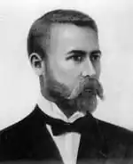

Липа Іван Левкович (літературні псевдоніми — Петро Шелест, Іван Степовик, народився 24 лютого 1865, Керч — помер 13 листопада 1923, Винники біля Львова) — український громадський і політичний діяч, письменник, за фахом лікар.
Співзасновник таємного товариства "Братство тарасівців". Український комісар Одеси (1917), член ЦК Української партії соціалістів-самостійників, міністр віросповідань УНР (1919).
За материнською лінією (Ганна Житецька) походить з козаків, що підтримували Івана Мазепу у його повстанні. Навчався в народній школі при грецькій церкві, яку відмінно закінчив. Відтак поступив у Керченську гімназію, де навчався у 1880-1888 і блискуче закінчив. 1888 — поступив на медичний факультет Харківського університету. 1891 — разом з Борисом Грінченком, Миколою Міхновським та іншими став засновником таємного товариства Братства Тарасівців, яке мало за свої завдання поширення ідей Тараса Шевченка та боротьбу за національне визволення українського народу. 1893 товариство розгромили, а Івана Липу заарештували. Після 13 місяців ув’язнення ще 3 роки жив під наглядом поліції у Керчі. 1897 закінчив Казанський університет, відтак працював лікарем на Херсонщині і в Полтаві. 1902–1918 — жив у Одесі, займався лікарською практикою. 1904-1905 — побудував у м. Дальник лікарню для незаможних жителів. Організував видавництво "Одеська літературна спілка", з 1905 видавав альманах "Багаття" (разом з дружиною), часто друкувався в українських часописах "Діло", "Народ", "Правда", "Буковина", "Зоря", "Літературний Науковий Вісник", "Українська Хата" та інших. Тісно співпрацював з одеською "Просвітою" і Одеським Літературним Товариством. 1917 — призначений українським комісаром Одеси, заснував українське видавництво "Народній Стяг". Згодом переїхав до Києва. З 1919 належав до Української Партії Соціалістів-Самостійників, входив до складу її Центрального комітету. У період Української Народної Республіки — керуючий управлінням культури і віровизнання в уряді. Був членом Всеукраїнської Національної Ради та Ради Республіки. 25 січня 1919 міністр культів УНР Іван Липа звернувся до духовенства та службовців духовного відомства з обіжником — зобов’язував вести усе церковне діловодство, особливо метричні книги, тільки українською мовою. З серпня 1920 входив до складу комісії з підготовки Конституції УНР, деякий час був міністром охорони здоров’я в Уряді Української Народної Республіки в екзилі. На початку 1922 переїхав до Львова. 1 березня 1922 р. прибув до Винник, про що свідчить запис в особистому записнику. У Винниках провадив життя, позбавлене політики: займався лікарською практикою і писав. Мешкав як приватний лікар у хаті Марії Лозовської по вулиці Лесі Українки (колишня вулиця Шашкевича; будинок зберігся донині). У Винниках відкрив медичну амбулаторію з такою табличкою: "Д-р мед. Іван Липа. Приймає". Був переслідуваний польською поліцією, бо не мав дозволу на практику. Заробляв мало, тому жив дуже скромно. Думками завжди був з близькими людьми, з якими розлучила доля, – дружиною Марією (залишилася в Одесі) і сином Юрієм (студент медичного факультету Познанського університету), з яким підтримував постійний зв’язок через листування. У Винниках у той сам час мешкав Іван Огієнко, який постійно спілкувався з самотнім Іваном Липою. І.Огієнко залишив цікаві спогади про Івана Липу, про його життя і побут у Винниках (опубліковані в журналі "Наша культура" за 1937). І.Огієнко у спогадах цитує Івана Липу: "Наш державний здвиг невгасимим вогнем запалить усі живі українські душі, і свого часу таки принесе відповідний плід. Помремо ми, але святий вогонь, що його ми сміливо запалили, уже ніколи не погасне. Це те, що переживе нас і створить найрозкішніші легенди в Україні…" У Винниках написав новели "Кара" й "Утома", виткані, як писав його син Юрій, "ніби блакитним цвітом". В листопаді 1923 р. стан здоров’я Івана Липи різко погіршився (з травня 1919 хворів на рак шлунка). Похований 15 листопада у Винниках. Ховав православного Івана Липу греко–католицький священник о. декан Григорій Гірняк (з дозволу митрополита Андрея Шептицького).